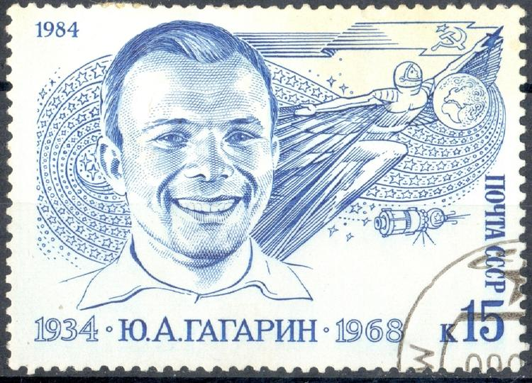

После приземления Гагарина случайно встретили жена лесничего и её внучка — они просто прогуливались в этих местах. Затем в районе приземления появились военные — они доставили пилота-космонавта в военную часть. Здесь он вышел на связь с командованием и сообщил, что поставленная перед ним задача выполнена.
Как только об этом стало известно Хрущёву, он позвонил министру обороны Малиновскому. В ходе разговора Хрущёв попросил о том, чтобы Гагарину как можно быстрее было присвоено звание майора. И, кстати, в сообщениях ТАСС от 12 апреля фигурировал уже майор Юрии Гагарин. А вот сам космонавт узнал о своём новом звании лишь после приземления. А ещё чуть позднее ему присвоили звание «Герой Советского Союза».
Изначально не планировалось никаких празднеств, связанных с появлением Гагарина в Москве. Но внезапно планы переменились, в спешном темпе была организована торжественная встреча. На самолёте Ил-18 космонавт прибыл в столичный аэропорт Внуково, где его уже ожидала восторженная толпа, представители СМИ, первые лица советского государства. Далее Гагарина повозили по главным улицам Москвы в автомобиле ЗИЛ с открытым верхом. Гагарин ехал стоя и приветствовал тех, кто пришёл его встречать. Со всех сторон звучали поздравления, многие принесли с собой плакаты. Какой-то мужчина даже пробрался сквозь выставленное оцепление и передал Гагарину цветы.
Потом на Красной площади космонавт, пройдя по красной ковровой дорожке, доложил об успешном полёте Никите Хрущёву. Некоторые люди, смотревшие эту кинохронику, обратили внимание на развязанный шнурок на Гагаринском ботинке. Эта забавная деталька сделала космонавта ещё более любимым в народе.
Легендарные кадры Гагарина в увесистом шлеме, говорящего «Поехали», были сняты не перед самим запуском, а значительно позже — то есть это чистой воды имитация. 12 апреля никому из главных участников запуска было не до съёмок. Потом эти кадры решили воссоздать — Юрий Гагарин и Сергей Королёв перед камерами повторили всё, что говорили и делали в утро перед запуском.
Этот космический полёт привлёк внимание людей со всего земного шара, а Гагарин стал знаменитостью международного, общепланетарного масштаба. По приглашениям первых лиц других государств он посетил приблизительно три десятка стран. Много поездок космонавт осуществил и по территории Советского Союза. Интересно, что в шестидесятые годы прошлого века наиболее популярным мужским именем в СССР стало имя Юрий. Многие пары захотели назвать детей в честь человека, летавшего в космос.
В шестидесятые годы Гагарин вёл заметную общественную деятельность, трудился в Центре подготовки космонавтов, в планах у него был второй космический полёт...
Однако 27 марта 1968 года Гагарин неожиданно и преждевременно погиб в авиакатастрофе во Владимирской области. Он разбился, когда вместе с инструктором Владимиром Серёгиным осуществлял плановый полёт на самолёте МиГ-15УТИ. Обстоятельства катастрофы не выяснены до конца и по сей день. Просто с МиГом пропала связь, а затем его обломки нашлись в нескольких десятках километров от аэродрома.
В связи со смертью Гагарина в Советском Союзе объявили траур. В честь лётчика-космонавта были названы населённые пункты, отдельные проспекты, переулки и улицы. Вдобавок ко всему в разных уголках Земли было открыто огромное количество памятников и скульптур, посвящённых Гагарину.
